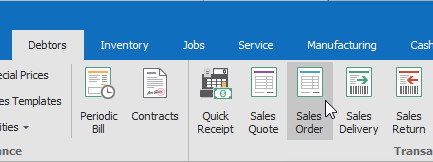
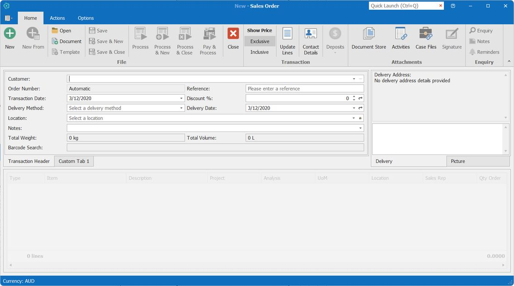
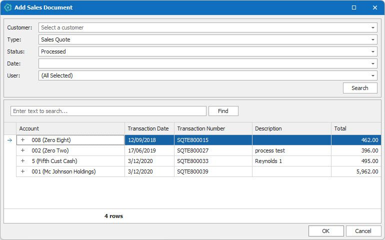

F1 route
New - Sales Order→F1→This topic
Supports existing context-sensitive help mapping.
Workflow route
Home→Workflow Guide→Sales→Quote and order
Gives a business-flow path to the same topic.
Vision User Guide › Sales and Order Management › Processing a customer order
Processing a customer order
Use this topic when a customer request needs to become a formal sales order. The order can then move to picking, delivery, invoicing, enquiry or further review.
Create the order
- Click the Debtors ledger tab.
- In the Transactions group on the ribbon bar, click Order.

The Transactions group on the Debtors ribbon bar - The New – Sales Order window is displayed.

The New – Sales Order window - Create the sales order using one of the available methods: open an accepted quote, enter the details manually, base the order on a previous order, or use a template.
- Check the order lines, delivery details, references, totals and any order-specific notes before saving or processing.
Result: a customer order is saved or processed. It can then be used for picking, delivery, invoicing, enquiry or review, depending on the user's workflow and security rights.
Common next actions
Ways to create the order
Accepted quoteAdd an accepted customer quote to the order.
Manual entryEnter customer and order line details directly.
Previous orderUse an earlier order as a starting point.
TemplateUse a saved sales document template.
Note: if back-to-back ordering has been configured for the product, processing the order may automatically generate a purchase order for the product.
Note: if the order is created in error, the Options tab contains an option to convert the order to a quote. This can only occur if the order has not been processed.
Add a processed customer quote
- From the File area on the ribbon bar, click Document. The Add Sales Document window is displayed.

The Add Sales Document window - Select the criteria from the drop-down lists and click Search. Quotes matching the criteria are displayed.
- Select the quote from the results list and click OK. The selected item is added to the grid.
- Edit the items on the order as required, then save or process the order according to your workflow.
Warning: only accepted quotes can be used in orders. Once a quote has been used in an order, it cannot be reused unless the order is not progressed and has been cleansed.
Warning: users may not be able to adjust the price or discount, depending on their security settings. If Can Override Product Price is not set in Debtor Transactions, the user cannot change either the price or discount fields.
Menu & field reference
This tab keeps the reference-style information available for users who arrive from F1 and need to confirm where the window lives, what controls are used, and which fields may affect the task.
Where this lives in Vision
| Ledger tab | Debtors |
| Ribbon group | Transactions |
| Command | Order |
| Window | New – Sales Order |
| Workflow group | Sales and Order Management › Quote and order |
Ribbon and window commands
| File › Document | Add an accepted sales quote or another sales document to the order. |
| Options tab | Contains order-specific options, including converting an unprocessed order back to a quote where allowed. |
| Search | Used in the Add Sales Document window to find matching quotes. |
| OK | Adds the selected sales document to the order grid. |
Fields users usually check
| Customer | The customer for the order. |
| Order lines | Products or services, quantities, prices and discounts. |
| Tax | Tax applied to the order lines and totals. |
| Delivery details | Delivery method, date and related delivery information. |
| References | Customer or internal references used to identify the order. |
Conditions and related topics
| Accepted quotes | Only accepted quotes can be added to an order. |
| Security rights | Price and discount changes may be restricted. |
| Related topics | Processing a customer quote · Deposits · Customer order picking and packing · Processing an invoice |
| Same topic route | Can be reached from F1 or from the workflow-based TOC. |